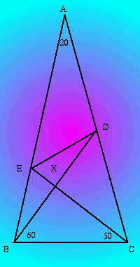

*** Чертов треугольник ***
Эта история началась более 40 лет назад. Летом тысяча девятьсот
пятьдесят шестого года двадцатилетний лоботряс, ставший впоследствии
моим отцом, совершал железнодорожный круиз в приазовских степях
юга России. Цель круиза была поистине наполеоновская. Лоботряс
ехал сдавать вступительные экзамены в таганрогский радиотехнический
институт. Подобрав скуки ради мятую газету, забытую кем-то в купе,
папаша мой обнаружил любопытную заметку. Статья приводила задачу, которая
в прошлом году использовалась где-то на вступительных экзаменах.
В конце автор гневно заявлял, что это садизм давать детям подобные задания.
Тем не менее задачка о решении треугольника не произвела на моего отца
какого-либо устрашающего впечатления. "Да тут и делать нечего" - сказал он
сам себе и вытащил из чемодана карандаш. В пять минут, однако, задача
не решилась. Не решилась и в десять. Она вообще не решилась до завершения
путешествия. "Любопытная задачка" - согласился отец с автором газетной
статьи, сходя на своей станции.
Первым экзаменом была математика. Каким-то образом в мозгу у отца
засела мысль, что если он не решит эту задачу, то не сможет поступить
в институт. Поэтому все время, отпущенное на подготовку к экзамену он
употребил на этот загадочный треугольник. Задача не решалась. Мало того
отец сдал экзамен на 3. И эта тройка доставила ему немало хлопот ибо
проходной балл удалось набрать с большим трудом.
Будучи студентом отец неоднократно возвращался к этой задаче, но задача
упорно не решалась. Шли годы. Отец закончил институт и уехал работать
по распределению. Решение не находилось. Отец обзавелся семьей, родился
я. Задача не решалась! Я окончил школу, проработал два года на заводе,
отслужил в армии. Отец не мог найти решения. Летом 1985 года я поступал
в институт и готовился сдавать вступительный экзамен по математике .
"Да знаешь ли ты, какие там задачи дают?!"- ехидно осведомился отец и начал
рисовать передо мной этот дьявольский треугольник. Задачу я не решил,
но у меня хватило ума про нее забыть готовиться к экзамену.
Экзамен я сдал на 5. А спустя несколько дней случилось чудо. Отец решил
эту задачу. Решение получилось с использованием какого-то очень
неочевидного рассуждения. На радостях папаша записал решение в записную
книжку и успокоился. Но! История не закончилась...
Вчера я гостил у родителей. (Надо сказать подобные визиты почему-то
всегда оборачиваются совершенно безобразной попойкой.) Отец
припомнил эту историю и пообещал показать мне решение. Однако выяснилось,
что записная книжка безвозвратно утеряна.
Когда я уезжал, он вытащил карандаш, бумажку и, вздохнув, начертил
чертов треугольник. Вот он:

Имеется равнобедренный треугольник с
углом при вершине 20 градусов. Из двух других
углов проведены отрезки к противоположным сторонам.
Отрезки образуют с основанием углы в 50 и 60
градусов. Концы этих отрезков также соединены.
Требуется найти все углы в треугольнике X.
Комментарий Константина Кнопа, редактора журнала "Компьтерра"
(C) *** JES 1999 - 2002 *** Ю.Шимановский yury@unitrends.com
http://www.geocities.com/Paris/Salon/1821
Назад|На главную